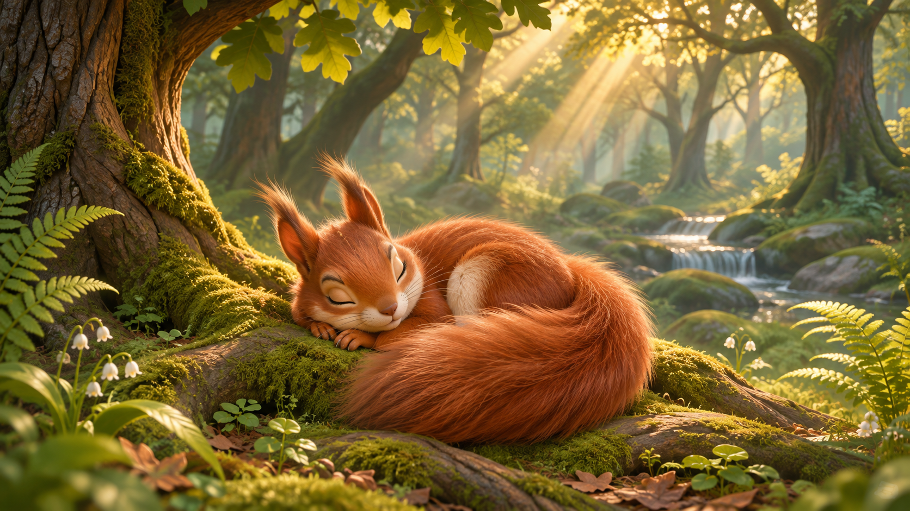
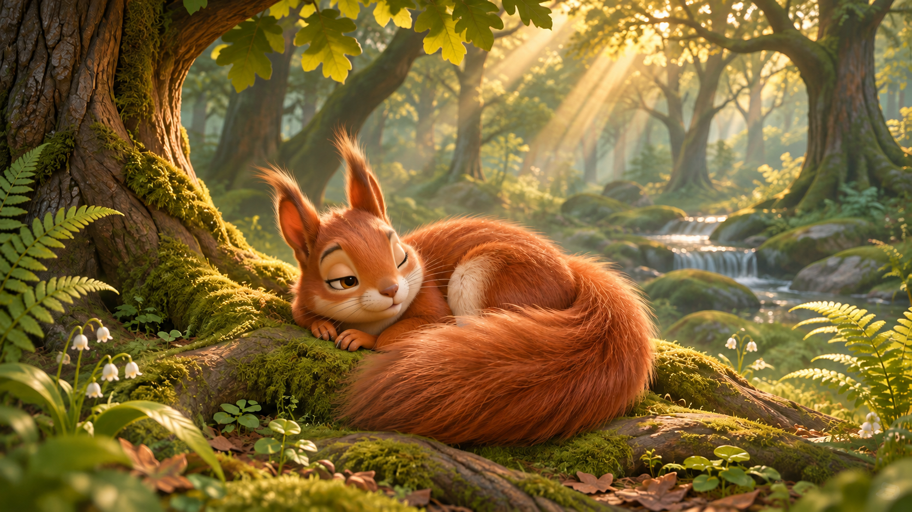
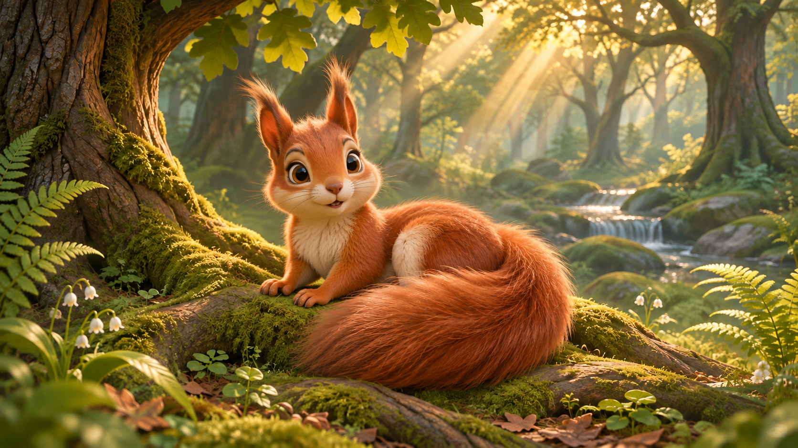

DIE LÄRMAMPEL FÜR EURE KLASSE
Ein bisschen Ruhe.
Ein lebendiger Wald.
Gemeinsam leiser werden – und sehen, was passiert.
BEREIT ZUM START○ Noch keine Messung



Der Wald wartet auf euch.
Startet das Mikrofon oder probiert die Szene im Demomodus aus.
Ruhezeit
0 s